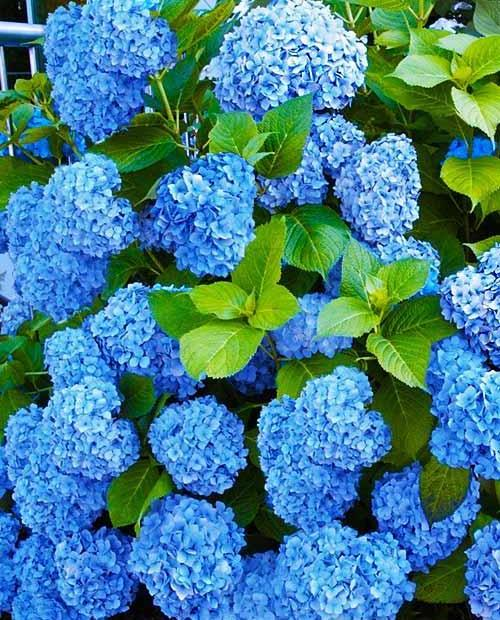

Выращиваем пышную гортензию
Гортензия – совершенно потрясающий по своей дивной красоте цветущий кустарник. Огромные, разноцветные, пышные шапки ее соцветий завораживают взор и заставляют забыть обо всем на свете.
Основное условие для здорового развития гортензии, это постоянная влажность почвы. Для образования крупных пышных соцветий растению необходимо избыточное количество влаги. При высадке посадочного материала гортензии нужно учитывать повышенную светолюбивость растения. Можно разместить в тени небольших деревьев или невысоких кустарников. Прямые солнечные лучи в жаркие летние дни для гортензии – очень нежелательны!
Все сорта гортензии легко и просто размножаются «делением взрослого» куста. Эту нехитрую процедуру обычно проводят осенью или весной. В летнее время гортензию можно размножить способом черенкования. Зелёные верхушки побегов нужно срезать с 2–3 парами листиков. Затем «черенки» воткнуть в смесь песка и торфа. Поместить в прохладное помещение на 3–4 недели. Через месяц молодые ростки укоренятся и посадочный материал готов.